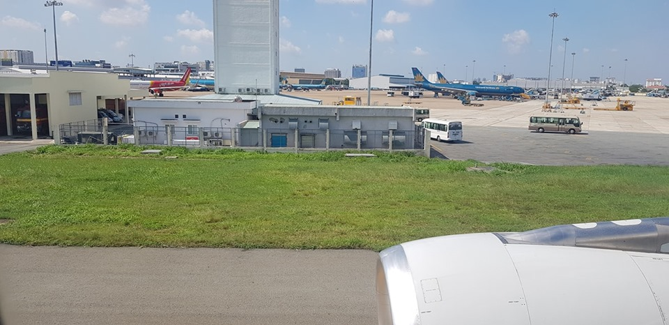

Đêm cuối nhà Má Tư ở Melissa, tui đến bên ông Paul chồng Má Tư để nói lời cảm ơn những điều tốt đẹp nhất mà ông và gia đình dành cho tía con tụi tui, đang nói chuyện với ông (qua google dịch), thì Má Tư nói một tràng tiếng Anh với ông Paul điều gì tui chẳng hiểu, ông Paul vội vả đi lên phòng đem xuống tặng tui một bao gấm đỏ có sợi dây rút trên miệng túi rất đẹp, ông nói: (qua lời dịch của con nhỏ Út của tui)
- Tôi tặng cho Hùng vật này, tuy rằng giá trị không lớn, nhưng đây là vật tôi rất thích.
Vốn là người rất vui tánh, ông nói giỡn thêm:
- Đừng có lấy cái này đi đánh bài thua uổng lắm nhe.
Con nhỏ Út vừa dịch cho tui nghe nó vừa cười vui vui, tui ôm chầm lấy ông siết chặt chặt để tỏ tấm lòng, sau đó tui nói và ra hiệu, tui rất quý và trân trọng tình cảm của ông dành cho mình, ông kêu tui nên mở ra xem cho biết, khi mở ra tui thấy một đồng tiền vàng có in nổi chân dung tổng thống Trump, mặt sau đồng tiền có hình con Đại bàng biểu tượng quốc huy của Hợp chủng quốc Hoa kỳ.
Tui cũng rất thích vật kỷ niệm này của ông "cột chèo" tặng cho mình, tui sẽ giữ vật này như một báu vật cho riêng mình để đáp lại tấm thịnh tình của ông Paul.
Trưa hôm sau, Cháu Kevin và con nhỏ Út của tui có nhiệm vụ đưa tía con tui ra phi trường Dallas để về lại Phi trường Los Angeles một lần nữa, từ đó sẽ lấy vé của hảng China Airline (Đài Loan) bay về Đài bắc sau đó nối chuyến bay khác của cùng hảng này để bay về đất mẹ thân yêu của mình.
Hành lý chất lên phía sau xe chật kín, Kevin khởi động máy xe cho xe được thoáng mát khi mở điều hòa không khí, vì hiện tại lúc đó nhiệt độ trong xe rất cao, mọi người trong nhà Má Tư, mấy đứa cháu nhỏ đều ra đứng chụp ảnh lưu niệm với tía con tụi tui, sau khi ôm hôn từ biệt mọi người, khi xe lăn bánh tui thấy có gì cay cay nơi khóe mắt, vốn là người dạt dào tình cảm nên mỗi cuộc chia ly tui cảm thấy như mình vừa đánh mất một cái gì quý giá vô cùng.
Xe đang bon bon trên Feerway, bổng chuông điện thoại của Kevin đỗ liên hồi, sau khi nghe máy Kevin đánh xe vòng lại nhà Má Tư thêm lần nữa, trong lúc tất bật lo chia tay chia chân, do không để ý nên còn sót lại một cái Vali, thiệt là uổng công cháu tui phải lái thêm một đoạn đường không mong đợi, dẫu sao cũng vui tui cho là ý của trời muốn cho cả nhà có dịp nhìn lại những người thân thêm một lần nữa, vì chắc phải lâu lắm mới có dịp quay lại nơi này.
Đến phi trường Dallas, tìm chỗ đậu xe xong Kevin và con Út cũng phụ đẩy Vali đến nơi cân hành lý của hảng Delta Airline (nằm sát bên đường nơi xuống xe), hảng này làm việc nhanh gọn nên phút chốc hành lý được đưa lên băng chuyền và vé họ in vé lên phi cơ cho luôn ( khỏi vô check in quầy vé bên trong vì nơi đó đông như kiến).
Sau khi xong các thủ tục trên, tụi tui tiển Kevin và con Út trở lại xe để ra về, bịn rịn, chụp ảnh cho đã đời rồi tưởng rằng hai đứa lên xe ra về, nhưng không hai đứa nhất quyết tiển tụi tui vô lại bên trong nơi sẽ vô cách ly, rồi bịn rịn với cặp mắt đỏ hoe của con Út khiến Kevin cũng chạnh lòng, thấy vậy tui kéo mấy đứa đi ra ngoài để lần này dứt khoát lùa cho hai đứa lên xe về, chứ cái kiểu tiển đưa kiểu này thì tết "Công gô" chưa ai rời được chỗ này, đợi hai đứa khuất dạng tụi tui mới xếp hàng vô để làm thủ tục chờ giờ lên máy bay.
Chặng đường gian nan bắt đầu từ đây, từ phi trường Dallas dự kiến bay về phi trường Los Angeles áng chừng một giờ bay, mà quỹ thời gian để làm thủ tục check in chuyến nay về Đài loan còn đến hai tiếng, thời gian này sẽ đủ để làm thủ tục cho chuyến bay kế tiếp của mình, tui cảm thấy tâm hồn thư thái tự an ủi:
"Kệ nó tuy có mệt, có đi xa nhưng đến với đất nước Hoa kỳ một lần cũng đáng lắm chứ".
Thời gian chờ đợi để lên phi cơ thật lâu, do chuyến bay này từ Los Angeles đáp xuống lấy khách rồi bay về lại Los Angeles họ bị chậm gần hai mươi phút do thời tiết, sau khi yên vị trên khi cơ tui chỉ còn đúng một tiếng bốn mươi phút để kịp đáp chuyến bay tiếp theo, nếu bị trể chuyến tại phi trường Los Angeles về Đài loan coi như tụi tui sẽ bị mất trắng vé máy bay chặng đó và chặng cuối cùng về Sài gòn nữa ( hảng China Air không có nghĩa vụ bồi thường vì lịch trình di chuyển của tui chuyến đi từ Dallas về nằm ngoài tour).
Ngồi trên phi cơ thú thật trong lòng tui như có lửa đang cháy ầm ĩ, lo sợ bị trể chuyến bay kế tiếp thành sự thật thì nhiều hệ lụy kéo theo, nào là mất tiền vé, tốn tiền lưu trú chờ mua vé mới.V.v.. Với suy nghĩ này khiến tui muốn bệnh.
Ngồi hàng ghế gần cuối đuôi phi cơ, tui ngồi lọt thỏm vào giữa, phía lối đi là một bà Mỹ trắng, phía cửa sổ là cô Mỹ đen có địu theo đứa con nhỏ, vé của tui đáng lẽ ngồi phía cửa sổ, nhưng cô gái này muốn ngồi phía đó cho tiện bề chăm sóc cháu nhỏ nên tui nhường, cô ta đã bày tỏ tấm lòng cảm ơn khi tui nhường ghế đó cho cô, có ngồi gần mới thấy sự nhân văn trong cách sống của người Mỹ, bà Mỹ trắng thấy cô gái da đen phải chật vật với đứa con nhỏ, bà ta bèn hỏi han và phụ giúp đồng thời bà cho bánh kẹo, nước uống cho cô gái cho em bé ăn để bé bớt quấy trên phi cơ, rồi dường như cô gái chưa thông thuộc đường sá ở Los Angeles, bà Mỹ trắng đã tận tình chỉ dẫn cuối cùng cô cũng hiểu và cảm ơn bà rối rít, chưa hết đâu nha các bạn, khi phi cơ đáp xuống bà Mỹ trắng nhanh nhẹn lấy hành lý giùm cô gái nọ và nhường cho cô rời khỏi phi cơ trước mình, tui rất ngưỡng mộ bà về điều này, tuy khác màu da nhưng bà ta không chút kì thị như tui tưởng, cũng nên nhắc lại một chút, trên đường phố Los Angeles rất nhiều người Homeless, đa phần là dân da màu, họ chọn hàng ba nơi các cửa hàng, hoặc co ro trên vỉa hè, họ cứ sống như vậy nhưng tuyệt nhiên chưa bao giờ tui thấy họ kêu gào hoặc ngữa tay xin bố thí, ai hảo tâm cho gì thì họ nhận nấy, nên những khi đi ngang qua những người này tui không lo sợ họ níu kéo hoặc làm phiền mình điều gì.
Phi cơ bò chậm rãi trên phi đạo rồi dừng hẳn lại để chờ ráp vô ống, vì không còn nhà ống để ráp vô cho hành khách đi xuống, ông cơ trưởng đã thông báo cho mọi người cố gắng chờ đợi trong vài phút, nghe thông báo trên tui thầm nghĩ:
"Kiểu này thì thua luôn là cái chắc, chờ ráp nối vô nhà ống, còn chờ hành khách lủ lượt kéo xuống tới phiên mình rời khỏi nơi này chắc "lúa vàng" luôn."
Cuối cùng tía con tui cũng rời khỏi phi cơ, vì đã chuẩn bị tinh thần sẳn rồi, sau khi qua khâu kiểm tra an ninh xong, cả ba người tụi tui phóng ào ào đến nơi trả hàng lý, vì qua phi trường này quá quen thuộc nên tui tui lấy hàng lý thật nhanh, từ đó vừa kéo vali chạy vừa hỏi thăm Terminal nơi có hảng China Ariline để lấy vé về Đài bắc.
Quý vi và các bạn nào có nếm mùi khổ sở ở phi trường Los Angeles thì không lạ gì với nỗi khổ của tụi tui trong ngày hôm đó, từ Terminal một đến Terminal năm rất xa, với sáu cái vali, hai cái ba lô tía con tui chia nhau đẩy, kéo vali bắt đầu cuộc thi chạy Marathon, (nếu như lúc này có cuộc thi chạy thật sự thì chàng Lực sỹ người Somalia chưa chắc gì qua mặt được tía con tui) đường thì hẹp, người thì đông đúc, khổ nhất là qua những đoạn họ đặt chướng ngại vật bằng những trụ làm bằng inox to tướng, qua những đoạn này phải chen chúc rất khó di chuyển, đôi chân già nua của tui bắt đầu căng cứng, hơi thở tui dồn dập nhiều lúc mệt muốn đứng tim, nhưng bằng giá nào tụi tui cũng phải về đích cho bằng được, đến trước quầy vé tui đứng muốn không vững nhưng mọi đau khổ vừa qua dường như tan biến một cách mau lẹ không ngờ, các ông thần may mắn đã mỉm cười với tụi tui vị họ đã giúp "vừa ngám" thời gian để check in.
Tui thầm cảm ơn Trời phật, Chúa thánh thần, ông Địa, ông Táo, Thần tài, đại khái nhớ tới vị nào tui cảm ơn vị ấy đã cứu tụi tui tránh "một bàn thua" trước mắt, ngồi trên phi cơ tui hồi tưởng lại đoạn đường gian nan vừa qua mà mình vừa trải, nó đầy gian truân nhưng cũng đầy ngọt ngào phải không các bạn.
Đến Đài Bắc tụi tui được lên phi cơ nhanh chóng, ghế ngồi hàng thứ chín chỉ cách khoang dành cho hạng Thương gia bằng cái rèm mỏng che hờ.

.Còn nỗi mừng nào hơn khi bánh phi cơ chạm trên phi đạo Tân Sơn Nhất, tụi tui như hồi sinh sau cơn bạo bệnh, bao nỗi nhọc nhằn tan biến tự bao giờ sau suốt gần ba mươi tiếng đồng hồ từ lúc tui từ giả gia đình Má Tư ở Melissa.
Chuyến đi tuy ngắn ngủi vì nó vỏn vẹn ba tuần lễ nhưng nó sẽ ghi đậm lại trong lòng tui cho đến ngày nhắm mắt lìa đời, bao ân tình kỷ niệm những ngày qua, bà con ruột thịt dành cho nhau tình cảm thắm thiết đã đành, đàng này không ruột rà nhưng khi biết tui đến những vùng đất kể trên thì anh chị em nơi đất khách đã không quản công, thậm chí nghỉ làm để đưa đón, đãi đằng ăn uống chăm sóc mình như một người thân thật thụ, nghĩa tình sâu đậm này là vết son ghi khắc mãi ở miền ký ức của mình, cho dù năm tháng sẽ trôi đi nhưng kỷ niệm này chẳng bao giờ phai nhạt trong tui.
Sài gòn 20.7.2019(10:48)